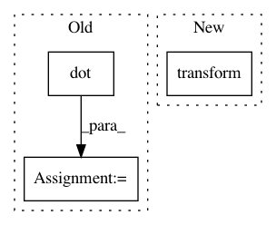

10137f3f3e982a68fdac3a0253bf0229f0f06b0b,doc/examples/syn_registration_3d.py,,,#,27
Before Change
import dipy.align.vector_fields as vfu
transform = np.linalg.inv(moving_affine).dot(pre_align.dot(static_affine))
resampled = vfu.warp_3d_affine(moving.astype(np.float32),
np.asarray(static.shape, dtype=np.int32),
transform)
resampled = np.asarray(resampled)
plot the overlapped middle slices of the volumes
After Change
static.shape, static_affine,
moving.shape, moving_affine)
resampled = affine_map.transform(moving)
plot the overlapped middle slices of the volumes
In pattern: SUPERPATTERN
Frequency: 3
Non-data size: 3
Instances
Project Name: nipy/dipy
Commit Name: 10137f3f3e982a68fdac3a0253bf0229f0f06b0b
Time: 2015-08-14
Author: jomaroceguedag@gmail.com
File Name: doc/examples/syn_registration_3d.py
Class Name:
Method Name:
Project Name: ysig/GraKeL
Commit Name: 0e84313d49f4b3f5aef0e0d558ecc34e271b2ad5
Time: 2018-01-24
Author: y.siglidis@gmail.com
File Name: grakel/graph_kernels.py
Class Name: GraphKernel
Method Name: transform
Project Name: brainiak/brainiak
Commit Name: 2077b56f590e48db5838584fece0ac8d620f3af3
Time: 2016-07-24
Author: yshin@princeton.edu
File Name: examples/funcalign/srm_image_prediction_example.py
Class Name:
Method Name: